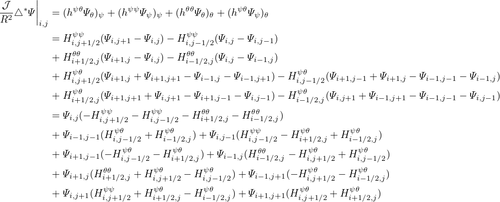

For the above magnetic field, the toroidal shift involved in the definition of the generalized toroidal angle can be expressed in simple analytical form. The toroidal shift is given by
|
| (367) |
where the local safety factor  can be written as
can be written as
 | (368) |
Using 𝒥 = −Rr and
 | (369) |
The local safety factor  in Eq. (368) is written as
 | (370) |
Using this, expression (367) is written
 | (371) |
Assume 𝜃 ∈ (−π,π), then the integration ∫ 0𝜃1∕Rd𝜃 can be analytically performed (using maxima), yielding
 | (372) |
Then expression (371) is written
 | (373) |
where use has been made of sin𝜃∕(cos𝜃 + 1) = tan(𝜃∕2). Using this, the generalized toroidal angle can be written as
The results given by the formula (373) are compared with the results from my code that assumes a general numerical configuration. The results from the two methods agree with each other, as is shown in Fig. 27, which provides confidence in both the analytical formula and the numerical code. 
 d𝜃 computed by using formula (373) and the numerical code
agree with each other. The different lines correspond to values of δ on different magnetic surfaces.
In the numerical code, two kinds of poloidal angles can be selected: one is the equal-volume
poloidal angle, and another is the equal-arch-length angle. Make sure that the latter is selected
when doing the comparison because the the poloidal angle 𝜃 appearing in the analytical formula
is the equal-arc-length poloidal angle.
d𝜃 computed by using formula (373) and the numerical code
agree with each other. The different lines correspond to values of δ on different magnetic surfaces.
In the numerical code, two kinds of poloidal angles can be selected: one is the equal-volume
poloidal angle, and another is the equal-arch-length angle. Make sure that the latter is selected
when doing the comparison because the the poloidal angle 𝜃 appearing in the analytical formula
is the equal-arc-length poloidal angle.In passing, we note that the straight-field-line poloidal angle 𝜃f can also be considered to be defined by
 | (375) |
i.,e,
 | (376) |
Then using Eq. (374), 𝜃f is written as
 | (377) |
which agrees with Eq. (A2) in Gorler’s paper[13].